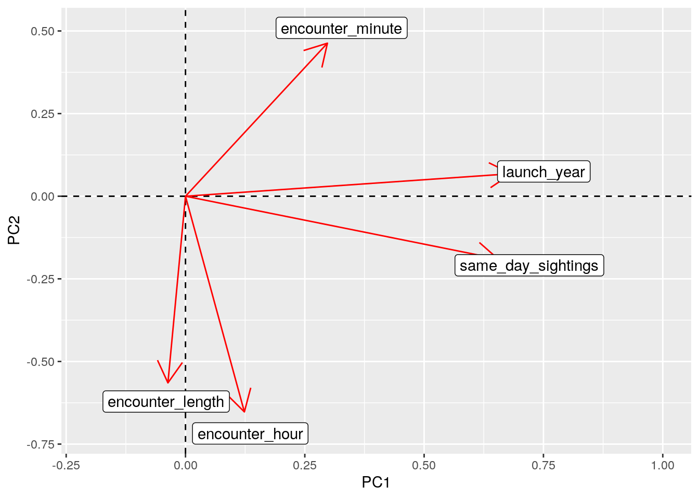

library(tidyverse)
launches <- read_csv("launches.csv")
launches <- launches %>% filter(state_code == "US") %>% select(launch_date,
launch_year, mission, category)
head(launches)## # A tibble: 6 x 4
## launch_date launch_year mission category
## <date> <dbl> <chr> <chr>
## 1 1967-06-29 1967 Secor Type II S/N 10 O
## 2 1967-08-23 1967 DAPP 3419 O
## 3 1967-10-11 1967 DAPP 4417 O
## 4 1968-05-23 1968 DAPP 5420 O
## 5 1968-10-23 1968 DAPP 6422 O
## 6 1969-07-23 1969 DAPP 7421 OThe first dataset I selected came from the archive of tidytuesday data from github, and contains information regarding rocket launches from 1957 to 2018. The dataset initially had 5,726 rows and 11 columns. For the purposes of this project, I filtered the dataset to only include the launch date, mission name, and category (success/failure) of launches from the United States.
ufo_sightings <- readr::read_csv("https://raw.githubusercontent.com/rfordatascience/tidytuesday/master/data/2019/2019-06-25/ufo_sightings.csv")
ufo_sightings <- ufo_sightings %>% filter(country == "us") %>%
separate(date_time, into = c("date", "time"), sep = " ") %>%
select(date, time, city_area, state, ufo_shape, encounter_length) %>%
mutate(date2 = as.Date(date, "%m/%d/%Y")) %>% select(-date) %>%
separate(time, into = c("encounter_hour", "encounter_minute"))
head(ufo_sightings)## # A tibble: 6 x 7
## encounter_hour encounter_minute city_area state ufo_shape encounter_length
## <chr> <chr> <chr> <chr> <chr> <dbl>
## 1 20 30 san marc… tx cylinder 2700
## 2 21 00 edna tx circle 20
## 3 20 00 kaneohe hi light 900
## 4 19 00 bristol tn sphere 300
## 5 23 45 norwalk ct disk 1200
## 6 20 00 pell city al disk 180
## # … with 1 more variable: date2 <date>The second dataset I selected is also from the tidytuesday archive on github. This set contains information regarding UFO sightings from 1910 to 2014, with 80,332 rows and 11 columns. For the purpose of the project, I selected the date, time, city, state, and length of the encounter, as well as the reported shape of the object. I suspected that there would be a large number of UFO sightings on the date of rocket launches, which led me to join these two data sets together and investigate their relationship.
Each dataset is already tidy, so I made use of pivot_wider() in the wrangling section to better represent the summarized data. I used pivot_longer() to restore the data and demonstrate my use of the functions.
data <- launches %>% full_join(ufo_sightings, by = c("launch_date" = "date2")) %>% #join by date
mutate(encounter_hour = as.numeric(encounter_hour), encounter_minute = as.numeric(encounter_minute)) %>% # make encounter hour/minute numeric
rename(event_date = launch_date)
head(data)## # A tibble: 6 x 10
## event_date launch_year mission category encounter_hour encounter_minute
## <date> <dbl> <chr> <chr> <dbl> <dbl>
## 1 1967-06-29 1967 Secor … O NA NA
## 2 1967-08-23 1967 DAPP 3… O NA NA
## 3 1967-10-11 1967 DAPP 4… O NA NA
## 4 1968-05-23 1968 DAPP 5… O NA NA
## 5 1968-10-23 1968 DAPP 6… O 15 0
## 6 1969-07-23 1969 DAPP 7… O NA NA
## # … with 4 more variables: city_area <chr>, state <chr>, ufo_shape <chr>,
## # encounter_length <dbl>A full join was done on the launches and ufo_sightings datasets based on the date of the launch/sighting. All variables that were selected previously were preserved. The resulting dataset contains 66,230 rows and 12 columns, and was further broken down throughout the rest of the project. Rows that contained no values for encounter_hour, encounter_minute, ufo_shape, etc. represent rocket launches that did not have a reported ufo sighting on the same day. Rows that include information for each column represent rocket launches that did have ufo sightings reported on the same day in the United States. To account for the join, the launch date was renamed as “event_date”, and the encounter hour/minute were converted to numeric values.
data <- data %>% group_by(event_date) %>% add_count(name = "same_day_sightings") %>% # creating count of sightings for given date
mutate(match = ifelse(is.na(encounter_hour) || is.na(launch_year), 0, 1)) # allows to filter for only days where launch and sighting both occurred
data2 <- data %>% filter(launch_year >= 1957 & launch_year <= 2014) %>% arrange(launch_year)
truedat <- data %>% filter(match == 1)
nrow(truedat)/nrow(data2) * 100 # what percentage of ufo sightings after 1957 occurred the same day as a rocket launch?## [1] 79.72945The newly joined dataset was grouped by the date of event, and a count was added to determine how many sightings occurred for each date. A new column was added called “match”, which I used to determine whether or not the launch date and sighting date were the same for a given row. Filtering the dataset to only include matching launches/sightings was important for determining the relationships between those variables. The “data2” variable was created to only account for launches/sightings that occurred between the years 1957 and 2014. Dividing the number of matches by the total number of sightings (1957-2014) gives us 0.797, meaning roughly 79.7% of UFO sightings occurred on days where a rocket launch occurred!
truedat %>% group_by(ufo_shape) %>% # max encounter length for each ufo shape (minutes)
summarize(max_encounter = max(encounter_length/60)) ## # A tibble: 23 x 2
## ufo_shape max_encounter
## <chr> <dbl>
## 1 changing 1230
## 2 chevron 240
## 3 cigar 2880
## 4 circle 4320
## 5 cone 45
## 6 cross 30
## 7 cylinder 60
## 8 delta 7
## 9 diamond 120
## 10 disk 630
## # … with 13 more rowstruedat %>% group_by(ufo_shape) %>% # mean encounter length for each reported ufo shape (minutes), including pivot_wider()
summarize(mean_encounter_length = mean(encounter_length/60, na.rm = T)) %>%
arrange(desc(mean_encounter_length)) %>%
pivot_wider(names_from = "ufo_shape", values_from = "mean_encounter_length") %>% round(1) #%>% ## # A tibble: 1 x 23
## fireball egg cigar sphere changing light circle disk diamond other chevron
## <dbl> <dbl> <dbl> <dbl> <dbl> <dbl> <dbl> <dbl> <dbl> <dbl> <dbl>
## 1 1014. 58.2 53.4 53.2 31.5 28.5 26.2 21.8 17.7 16.6 14.8
## # … with 12 more variables: `NA` <dbl>, oval <dbl>, unknown <dbl>, flash <dbl>,
## # triangle <dbl>, cone <dbl>, cross <dbl>, formation <dbl>, teardrop <dbl>,
## # delta <dbl>, rectangle <dbl>, cylinder <dbl> #pivot_longer(cols = c(fireball:cylinder), names_to = "ufo_shape", values_to = "mean_encounter_length")I began summarizing the data by grouping it by the reported UFO shape. The maximum encounter length (in minutes) was determined for each shape registered. Next, the mean encounter length (in minutes) was determined for each shape and the result was piped into pivot_wider in order to better visualize the data.
truedat %>% summarize(median_encounter = median(encounter_hour)) # median encounter hour for each event date## # A tibble: 632 x 2
## event_date median_encounter
## <date> <dbl>
## 1 1959-07-16 18
## 2 1959-08-13 21.5
## 3 1959-08-15 15
## 4 1960-04-01 21
## 5 1960-08-10 9.5
## 6 1961-02-22 20
## 7 1961-06-30 17
## 8 1961-08-30 0
## 9 1962-05-15 21
## 10 1962-05-30 20
## # … with 622 more rowstruedat %>% group_by(launch_year) %>% # mean and sd encounter length for each launch year (minutes)
summarize(mean_encounter = mean(encounter_length/60, na.rm = T), sd_encounter = sd(encounter_length/60, na.rm = T)) %>%
round(1)## # A tibble: 56 x 3
## launch_year mean_encounter sd_encounter
## <dbl> <dbl> <dbl>
## 1 1959 20.8 17.7
## 2 1960 8.4 10.3
## 3 1961 506. 1164
## 4 1962 3.5 3
## 5 1963 97.8 137.
## 6 1964 9.5 18
## 7 1965 3881. 18963.
## 8 1966 11.8 20.1
## 9 1967 6.2 8.1
## 10 1968 10.1 14.5
## # … with 46 more rowstruedat %>% group_by(state, category) %>% # which state had the most successful rocket launches when a ufo sighting is reported?
filter(category == "O") %>%
summarize(count = n()) %>%
arrange(desc(count))## # A tibble: 51 x 3
## # Groups: state [51]
## state category count
## <chr> <chr> <int>
## 1 ca O 527
## 2 fl O 258
## 3 wa O 235
## 4 tx O 189
## 5 ny O 186
## 6 pa O 153
## 7 az O 139
## 8 oh O 126
## 9 or O 111
## 10 il O 96
## # … with 41 more rowstruedat %>% group_by(state, category) %>% # which state had the most unsuccessful launches when a ufo sighting was reported?
filter(category == "F") %>%
summarize(count = n()) %>%
arrange(desc(count))## # A tibble: 34 x 3
## # Groups: state [34]
## state category count
## <chr> <chr> <int>
## 1 ca F 19
## 2 nc F 7
## 3 il F 6
## 4 md F 6
## 5 oh F 6
## 6 tx F 6
## 7 nj F 5
## 8 wa F 5
## 9 co F 4
## 10 fl F 4
## # … with 24 more rowsGrouping by state and the category of the launch allowed us to determine which state had the most success (or failure) when it comes to rocket launches. When viewing the results, it looks like California holds the #1 spot for both! A total of 527 successful launches and 19 unsuccessful launches occurred in California from 1957 to 2018.
numdat <- truedat %>% select_if(is.numeric) %>% select(-match) %>%
subset(select = -event_date) %>% cor(use = "pair") # correlation matrix
numdat## launch_year encounter_hour encounter_minute
## launch_year 1.000000000 0.008298324 0.162452239
## encounter_hour 0.008298324 1.000000000 -0.009622217
## encounter_minute 0.162452239 -0.009622217 1.000000000
## encounter_length -0.025166946 0.018766217 -0.025111776
## same_day_sightings 0.425035978 0.087472332 0.049740437
## encounter_length same_day_sightings
## launch_year -0.025166946 0.425035978
## encounter_hour 0.018766217 0.087472332
## encounter_minute -0.025111776 0.049740437
## encounter_length 1.000000000 0.007019594
## same_day_sightings 0.007019594 1.000000000Lastly, a correlation matrix wax created for the numeric values in the dataset. This gives us an idea about the relationship between different variables while also providing us the groundwork for visualizing the data.
tidydat <- numdat %>% as.data.frame %>% rownames_to_column("var1") %>%
pivot_longer(-1, names_to = "var2", values_to = "correlation")
tidydat %>% ggplot(aes(var1, var2, fill = correlation)) + geom_tile() +
scale_fill_gradient2(low = "red", mid = "white", high = "blue") +
geom_text(aes(label = round(correlation, 2)), color = "black",
size = 4) + theme(axis.text.x = element_text(angle = 90,
hjust = 1)) + coord_fixed()Above shows a correlation heatmap between each numeric variable in the dataset, where a color spectrum used to better examine the relationship between variables. Blue is representative of greater correlation while white is representative of no correlation. There appears to be little to no correlation between them regardless of the statistics created previously. The greatest correlation occurred between the number of same day sightings and the year that the event happened.
truedat %>% distinct() %>% ggplot(aes(launch_year, same_day_sightings)) +
geom_point(stat = "summary", aes(color = category)) + scale_x_continuous(breaks = seq(1950,
2020, by = 10)) + ggtitle("Number of Sightings Reported Over Time") +
theme(plot.title = element_text(hjust = 0.5)) + theme(legend.position = "top")Considering that the greatest amount of correlation occurred between the year that the launch occurred and the number of UFO sightings reported for the same day, I created a plot displaying this relationship. It is apparent that the number of same day sightings reported increased over time, resembling an exponential curve as time goes on. Each point on the plot is colored according to the category of the event. There appears to be no correlation between how many sightings were reported and whether or not launch was successful.
data2 <- data2 %>% filter(match == 1) %>% mutate(decade = floor(launch_year/10) *
10) %>% group_by(decade)
data2 %>% group_by(decade) %>% count(ufo_shape) %>% slice(which.max(n)) %>%
ggplot(aes(decade, n)) + geom_bar(stat = "identity", aes(fill = ufo_shape)) +
scale_x_continuous(breaks = seq(1950, 2020, by = 10)) + ggtitle("Most Commonly Reported UFO Shape for each Decade") +
theme(plot.title = element_text(hjust = 0.5)) + theme(legend.position = "top")Let’s take a look at the most commonly reported UFO shapes for each decade. I began by creating a new column in the existing dataset that defines the decade of each launch/sighting. I grouped by decade and counted the number of sightings for each UFO shape before selecting the largest value. These values were plotted using a bar chart, where the color of each bar is representative of the most common UFO shape! “Light” seems to be the most popular shape (and largest number of sightings) that was reported since 1990, which is consistent with our previous graph. As the time continues, more sightings were reported!
finaldat <- truedat %>% select_if(is.numeric) %>% # cleaning data, selecting only numerics that matter
select(-match) %>%
subset(select = -event_date) %>%
scale() # normalizing the data
head(finaldat)## launch_year encounter_hour encounter_minute encounter_length
## [1,] -3.130957 -0.0843132 -0.9880140 -0.02113046
## [2,] -2.772259 0.5789391 0.6850242 -0.02782617
## [3,] -2.592910 -0.4822646 -0.9880140 -0.02866314
## [4,] -2.592910 -0.4822646 -0.9880140 -0.02868850
## [5,] -2.234211 -2.0740702 -0.9880140 -0.02417396
## [6,] -2.234211 0.3136382 -0.9880140 -0.02721747
## same_day_sightings
## [1,] -1.251040
## [2,] -1.251040
## [3,] -1.147004
## [4,] -1.147004
## [5,] -1.147004
## [6,] -1.147004rownames(finaldat) <- truedat$event_date
pca <- princomp(finaldat)
names(pca)## [1] "sdev" "loadings" "center" "scale" "n.obs" "scores" "call"summary(pca, loadings = T) # summary of PCA## Importance of components:
## Comp.1 Comp.2 Comp.3 Comp.4 Comp.5
## Standard deviation 1.2170283 1.0234257 0.9890772 0.9689432 0.7436478
## Proportion of Variance 0.2963089 0.2095347 0.1957058 0.1878192 0.1106313
## Cumulative Proportion 0.2963089 0.5058437 0.7015495 0.8893687 1.0000000
##
## Loadings:
## Comp.1 Comp.2 Comp.3 Comp.4 Comp.5
## launch_year 0.683 0.159 0.706
## encounter_hour 0.123 -0.653 -0.538 -0.507 0.114
## encounter_minute 0.297 0.463 0.212 -0.788 -0.177
## encounter_length -0.565 0.812 -0.135
## same_day_sightings 0.655 -0.190 0.280 -0.675eigval <- pca$sdev^2 # obtaining eigenvalues
varprop = round(eigval/sum(eigval), 2) # determines proportion of variation for each principal component
varprop## Comp.1 Comp.2 Comp.3 Comp.4 Comp.5
## 0.30 0.21 0.20 0.19 0.11ggplot() + geom_bar(aes(y=varprop, x=1:5), stat="identity") + xlab("") + geom_path(aes(y=varprop, x=1:5)) + #determining how many principal components to keep!
geom_text(aes(x=1:5, y=varprop, label=round(varprop, 2)), vjust=1, col="white", size=5) +
scale_y_continuous(breaks=seq(0, .6, .2)) +
scale_x_continuous(breaks=1:10)A scree plot was created in order to determine the number of principal components to keep. According to the plot, 2 principal components would be most ideal since the curve flattens afterwards. It is important to understand each principal component’s contribution to the overall variation, which is equivalent to the values within each bar.
df <- data.frame(PC1 = pca$scores[, 1], PC2 = pca$scores[, 2]) #creating dataframe so we can plot principal components
ggplot(df, aes(PC1, PC2)) + geom_point() + ylim(-20, 10)The scores from the dataset were then plotted using the first 2 principal components. The results can be seen above, where an extreme value is visible on the lower end of the y-axis. Principal component 1 is responsible for 30% of the variation whereas principle component 2 accounts for 21% of variation.
pca$loadings[1:5, 1:2] %>% as.data.frame %>% rownames_to_column %>% # tells us which variables contribute to which principal components
ggplot() + geom_hline(aes(yintercept=0), lty=2) +
geom_vline(aes(xintercept=0), lty=2) + ylab("PC2") + xlab("PC1") +
geom_segment(aes(x=0, y=0, xend=Comp.1, yend=Comp.2), arrow=arrow(), col="red") +
geom_label(aes(x=Comp.1*1.1, y=Comp.2*1.1, label=rowname)) + xlim( -0.2, 1) Finally, a loading plot was created in order to determine which variables contribute to each principal component. The angles between each vector show the correlation between the two!